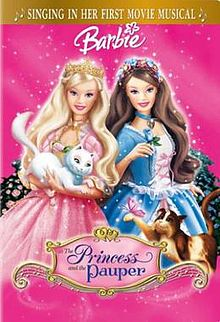

Barbie as the Princess and the Pauper
| Barbie as the Princess and the Pauper | |
|---|---|
|  DVD/VHS Cover | |
| Directed by | William Lau |
| Produced by | Jesyca C. Durchin Jennifer Twiner McCarron |
| Written by | Cliff Ruby Elana Lesser |
| Based on | The Prince and the Pauper by Mark Twain (uncredited) |
| Starring | Kelly Sheridan Mark Hildreth Alessandro Juliani Ian James Corlett Kathleen Barr Martin Short |
| Narrated by | Kelly Sheridan |
| Music by | Arnie Roth |
| Edited by | Greg Richardson |
Production companies | |
| Distributed by | Lions Gate Home Entertainment |
Release date |
|
Running time | 85 minutes |
| Countries | Canada United States |
| Language | English |
{kind=link}
Barbie as the Princess and the Pauper[1][2][3] is a 2004 American-Canadian direct-to-DVD computer animated musical fantasy film, and the first musical in the Barbie film series. It is directed by William Lau and stars the voice of Kelly Sheridan as the Barbie protagonists, Anneliese and Erika. The film is loosely inspired by the 1881 Mark Twain novel The Prince and the Pauper, but unrelated to the 1939 film The Princess and the Pauper. It is the first Barbie classic film that completely excludes fantastic elements (fairies, magic, mermaids, etc), which were a usual part of Barbie franchise. It is generally considered to be one of the greatest films in the franchise and has secured a strong cult following.
Songs for the film are written by Amy Powers, Megan Cavallari and Rob Hudnut, who also executive produced the film.
Plot[edit]
In an unnamed kingdom, a blonde princess and a brunette pauper are born at the same time. Several years later, Princess Anneliese is betrothed by her mother, Queen Genevieve, to the wealthy King Dominick to save the nearly bankrupt royal treasury; however, she is in love with her young tutor Julian. The Pauper Erika is an indentured servant, working off her parents' debt at Madame Carp's Dress Emporium, but dreams of becoming a singer and seeing the world.
Unbeknownst to the Queen, the reason behind the kingdom's bankruptcy is her adviser Preminger has been stealing gold, emptying the royal mines. Upon learning from his henchmen, Nick and Nack, that the Queen has arranged Anneliese's marriage to King Dominick, he decides to make Anneliese mysteriously disappear, which will cancel the engagement; after which Preminger can pretend he has found the Princess, earning her hand in marriage, and allowing him to accede the throne and become king.
Julian takes Anneliese for a day out into the kingdom so that she can be free for once; there, she witnesses the poverty caused by the kingdom’s bankruptcy. Anneliese hears Erika, who is performing in the street to earn money for herself, but Madame Carp collects it as part of her debt. Anneliese and Erika meet and learn they are identical, apart from their hair color and the crown-shaped birthmark on Anneliese's shoulder. The two bond over their shared troubles and become fast friends. That night, Anneliese and her cat Serafina are abducted by Nick and Nack, who leave a forged letter saying she ran away.
Julian, doubting the letter, asks Erika to impersonate the Princess, saving the engagement while he investigates Anneliese's disappearance. Preminger is surprised when Erika, disguised as Anneliese, presents herself at the palace. King Dominick introduces himself to the disguised Erika; over time, the two fall in love, but Erika worries about what will happen if she is found out.
The real Anneliese escapes Nick and Nack, but is turned away from the palace because the guards think the Princess (Erika) is already inside. Mistaking Anneliese for Erika, Madame Carp forces Anneliese into her shop and locks her inside. A suspicious Julian follows Preminger to the house where Anneliese was being kept and overhears Preminger's plans, but is discovered and captured.
Anneliese has Serafina take her ring and a tag from the dress shop so someone can find her; unfortunately, Preminger and his dog Midas intercept her. Preminger takes Anneliese to the mines where she is imprisoned with Julian after Nick and Nack cause a cave-in. Preminger returns to the palace, where he exposes Erika as a fake and has her imprisoned. Preminger convinces the Queen that Anneliese is dead and that they must marry to save the kingdom; with no other options, she reluctantly agrees.
Erika escapes the dungeon by singing a lullaby, causing the guard to fall asleep, and taking his keys. She bumps into King Dominick who tells her that he doesn't believe Preminger's claims about her. Meanwhile, Anneliese and Julian find out how to restore the kingdom's resources with some geodes filled with crystals; the two then confess their love for each other. Erika's barking cat, Wolfie, unearths a mine shaft and the group escapes by flooding the room and floating towards the surface in a barrel.
At the Queen and Preminger's wedding, Anneliese arrives, proves her identity with her birthmark, and reveals the truth about Preminger. After a brief chase, Preminger is arrested along with Nick and Nack. Anneliese tells her mother that she wants to marry Julian and that they can help save the kingdom. Soon after, the kingdom’s prosperity is restored thanks to the crystals in the mine. Madame Carp goes out of business; and—with her debt finally paid—Erika leaves to become a renowned singer. After touring the world, Erika realizes where her heart is and decides to return home to marry Dominick. Anneliese and Erika have a double wedding and they and their husbands ride off in a carriage together.
Voice cast[edit]
- Kelly Sheridan as Princess Anneliese / Erika / Narrator[4]
- Melissa Lyons as Princess Anneliese (singing voice)
- Julie Stevens as Erika (singing voice)
- Alessandro Juliani as Julian
- Mark Hildreth as King Dominick
- Mark Luna as King Dominick (singing voice)
- Martin Short as Preminger
- Kathleen Barr as Serafina / Bertie
- Ian James Corlett as Wolfie
- Ellen Kennedy as Queen Genevieve
- Pam Hyatt as Madame Carp
- Brian Drummond as Nick
- Jan Rabson as Nack / Midas
- Colin Murdock as the Royal Scheduler
- Janyse Jaud as a Palace Maid
- Lee Tockar as Ambassador Bismarck
- Garry Chalk as Herve
- Roger Monk as the Minister
Soundtrack[edit]
This film is the first musical in the series of Barbie CGI films. The entire soundtrack (including popular duets and the opening orchestral theme) can be found on the "Barbie Sings! The Princess Movie Song Collection" CD, released by Mattel in 2004.
The songs in the film are, in chronological order, as follows.
- Free - Performed by Julie Stevens (Erika) & Melissa Lyons (Anneliese)
- How Can I Refuse? - Performed by Martin Short (Preminger)
- Written in Your Heart (Prelude) - Performed by Julie Stevens (Erika)
- I Am a Girl Like You - Performed by Julie Stevens (Erika) & Melissa Lyons (Anneliese)
- To Be a Princess - Performed by Alessandro Juliani (Julian) & Julie Stevens (Erika)
- The Cat's Meow - Performed by Julie Stevens (Erika)
- How Can You Refuse? - Performed by Martin Short (Preminger)
- If You Love Me for Me - Performed by Julie Stevens (Erika) & Mark Luna (Dominick)
- Written in Your Heart (finale) - Performed by Julie Stevens (Erika) & Melissa Lyons (Anneliese)
- I'm on My Way - Performed by Sara Niemietz
Reception[edit]
DVD Verdict called it "wholesome entertainment" with "sweet songs tunefully sung" though lacking in grown-up humor.[5] Entertainment Weekly scored it a B+, noting a generally "feminist" story, and DVD extras including seven sing-along tracks.[6] TV Guide scored it 2.5/4, praising the "peppy score" and classic story as distinguishing an otherwise "ordinary Mattel-icized version of the classic tale".[7]
Home Media release[edit]
The DVD and VHS was released on September 28, 2004 and distributed by Lionsgate Home Entertainment. The re-release was released on January 5, 2010 by Universal Studios. The DVD also included a CD containing seven songs from the film soundtrack.
Video game[edit]
A video game for Game Boy Advance, PC, and Macintosh was released in 2004 by Vivendi Universal Games. In the Game Boy Advance title, the plot follows that of the movie: players must thwart Preminger's attempt to take over the kingdom by marrying Anneliese. Players control four characters: Anneliese, Erika, Serafina, and Wolfie.
References[edit]
- ^ "Barbie as The Princess and the Pauper". Universal Pictures Home Entertainment. Retrieved 2018-01-24.
- ^ Barbie as the Princess and the Pauper, retrieved 2018-01-24
- ^ Lau, William (2004-09-28), Barbie as the Princess and the Pauper, Kelly Sheridan, Melissa Lyons, Julie Stevens, retrieved 2018-01-24
- ^ "Barbie as the Princess and the Pauper". IMDb. Retrieved 23 January 2013.
- ^ Evans, Steve (February 10, 2005). "Barbie As The Princess And The Pauper" (Review)". DVD Verdict. Archived from the original on 5 April 2016. Retrieved 5 August 2019.
- ^ Bierly, Mandi (October 1, 2004). "Barbie As The Princess And The Pauper" (Review)". Entertainment Weekly. Meredith Corporation. Retrieved 5 August 2019.
- ^ Pardi, Robert (2004). "Barbie As The Princess And The Pauper" (Review)". TV Guide. CBS Interactive Inc. Retrieved 5 August 2019.
External links[edit]
- 2004 films
- English-language films
- 2004 direct-to-video films
- 2004 computer-animated films
- 2000s American animated films
- 2000s musical fantasy films
- Barbie films
- 2000s children's animated films
- Films based on The Prince and the Pauper
- Lionsgate films
- Lionsgate animated films
- American children's animated fantasy films
- American direct-to-video films
- American children's animated musical films
- Canadian direct-to-video films
- Canadian independent films
- Canadian animated feature films
- Animated films based on novels
- 2000s children's fantasy films
- American musical fantasy films
- Canadian musical fantasy films
- Films set in England
- Films set in palaces
- Canadian films
- American films